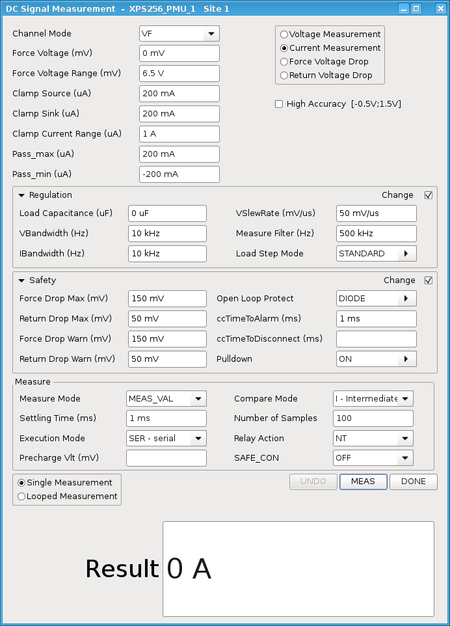

XPS256 programming - PMU operating mode
In PMU operating mode, a pin is used like a standard PMU to temporarily supply power during the execution of a single test suite or a group of test suites.
Pin definition
An XPS256 pin is configured to operate in PMU operating mode if it is defined as dc type pin using the Digital Pins editor. The Type parameter is to be set to dc and the Mode parameter is to be set to SIG.
See also Digital Pins editor.
Hardware view
Hardware view of XPS256 in PMU operating mode:

|
|
|
 |
See also Default values, Load step response, and Voltage drop measurement. |
SmartRDI overview
The complete functionality to set up an XPS256 channel in the PMU operating mode is covered by the dc() API of SmartRDI. Both the code‑based mode and the pattern‑based mode are supported. For more information refer to Setting up DC Scale pins with SmartRDI and the related member functions of the API.
API overview
The complete functionality to set up an XPS256 channel in the PMU operating mode and to perform voltage and current measurements are covered by APIs SPMU_TASK and SPMU_PIN_TASK.
Pattern‑based setups and measurements are supported by DC events. For the maximum pattern frequency, refer also to Minimum period / maximum frequency of the sequencer.
Relay switching in PMU operating mode
The relay() member function of the SPMU_PIN_TASK class selects the termination mode that specifies the relay control pattern of the target pins.
DC-Scale cards support the following relay switching modes:
- NO
- NT
The termination modes NTMBB, NTBBM, and TERM are not supported by DC-Scale cards.
The tables below show the effect of relay switching with and without preCharge.
| SPMU_TASK.execMode() | FORCE_ON | GPF | PPF | PVAL | FORCE_OFF | |||
|---|---|---|---|---|---|---|
| SPMU_PIN_TASK.relay() | NO | NT | NO | NT | NO | NT |
| Setup PMU | Yes | Yes | Yes | Yes | Yes | Yes |
| Close relay | leave unchanged | Yes | leave unchanged | Yes | leave unchanged | leave unchanged |
| Do measure | No | No | Yes | Yes | No | No |
| Open relay | leave unchanged | leave unchanged | leave unchanged | Yes | leave unchanged | Yes |
| SPMU_TASK.execMode() | FORCE_ON | GPF | PPF | PVAL | FORCE_OFF | |||
|---|---|---|---|---|---|---|
| SPMU_PIN_TASK.relay() | NO | NT | NO | NT | NO | NT |
| Precharge PMU | No | Yes | No | Yes | No | No |
| Close relay | leave unchanged | Yes | leave unchanged | Yes | leave unchanged | leave unchanged |
| Setup PMU | Yes | Yes | Yes | Yes | Yes | Yes |
| Do measure | No | No | Yes | Yes | No | No |
| Open relay | leave unchanged | leave unchanged | leave unchanged | Yes | leave unchanged | Yes |
Supported measurement modes
Supported measurement modes of the SPMU_PIN_TASK.mode() API:
| Parameter mode | Description | Note | |
|---|---|---|---|
| "VFVM" | Force voltage and measure voltage. | Basic voltage or current forcing modes of the PMU
with programmable current or voltage clamp. Note: Unlike other DC scale cards, XPS256 pins feature a real current force mode with programmable voltage clamps. |
|
| "VFIM" | Force current and measure voltage. | ||
| "VFIM_UNGANGED" | Force voltage and measure current by temporarily separating ganged channels for this measurement. | ||
| "CFVM" | Force current directly and measure voltage. | ||
| "CFIM" | Force current directly and measure current. | ||
| "IFVM" | Force current and measure voltage. | Legacy mode for compatibility with other DC scale cards: Currents are forced using the clamp current functionality. The clamp current is programmed to the required force value, and the voltage must be set to a value that forces the pin into the clamping situation. | |
| "IFVM_UNGANGED" | Force current and measure voltage by temporarily separating
ganged channels for this measurement. Voltage measurements in unganged mode means that the number of forcing channels of a ganging group is minimized temporarily to improve the stability of the forced current and the voltage measurement. |
||
| "VM_HIZ" | High impedance voltage measurement. | The PMU is set to a high-impedance mode. Only voltage measurements are supported. | |
Application note
- DC events in reused pattern
- For a minimized test time we recommend,
not to reuse pattern with DC events that are to be applied for different
XPS256 ranges. The recommendation applies to pattern that are manually
created using the related test method APIs but not to the automatically
created SmartRDI pattern.
The XPS256 channels feature several force ranges. The pattern data of related DC events must be reloaded in case the containing pattern is reused for another range. This may significantly increase the test time.
The recommendation applies to all DC events that change the force- or clamp value or range or the measurement range.
Examples
Examples
The following examples demonstrate how to set up an XPS256 pin for a standard current measurement.
The three examples are set up in a three-step sequence of connecting the pin and applying the basic setup, measuring the requested parameter, and disconnecting in a separate task. This sequence is suitable for XPS256-specific tests, since very often more than one setup has to be applied and more than one measurement has to be carried out before the pin is disconnected again.
- Example 1: SmartRDI, pattern‑based programming
Pattern‑based programming using SmartRDI is the recommended solution that requires the least amount of code and on the other hand delivers the most stable result in terms of timing.
- Example 2: SmartRDI, code‑based programming
Code‑based programming using SmartRDI needs some more code and must follow the structure of the wrapped test method APIs.
- Example 3: Test method API SPMU_TASK
This example is based on the test method APIs and is strongly tied to the structure of the underlying commands.
The code of the three examples generates the same measurement sequence for the programmed pin. If you use the Trace Function to compare the code‑based SmartRDI example and the example based on the test method APIs, you will get the same output in the MCDLog file.
Example 1: SmartRDI, pattern‑based programming
The example uses a code‑based RDI command to setup and connect the XPS256 pin. The following RDI block performs a pattern‑based measurement. The last RDI command disconnects the XPS256 pin in code‑based mode.
Since the RDI block uses a specialized DC event to perform the measurement, only the measurement related parameters must be defined. In contrast, for code‑based programming with SmartRDI or programming with test method APIs, all parameters must be specified also for the measurement.
RDI_INIT();
ON_FIRST_INVOCATION_BEGIN();
{
rdi.dc().pin("XPS256_PMU_1")
.vForce ( 5.0 V) .vForceRange(7.0 V).preCharge(0.0 V)
.iClamp (-5.0 mA, 50.0 mA).iForceRange(0.1 A)
.execute ();
RDI_BEGIN();
{
rdi.dc("iMeasXPS256").pin("XPS256_PMU_1")
.iMeas ()
.average (16)
.measWait (2.5 ms)
.execute ();
}
RDI_END();
rdi.dc().pin("XPS256_PMU_1").disconnect().execute();
}
ON_FIRST_INVOCATION_END();
double resultIMeasXPS256;
resultIMeasXPS256 = rdi.id("iMeasXPS256").getValue("XPS256_PMU_1");
Example 2: SmartRDI, code‑based programming
The first RDI command connects and sets the XPS256 pin: DC Scale pins in PMU operating mode are automatically connected if iForce() or vForce() are used within the RDI command. For more information, see also Setting up DC Scale pins with SmartRDI.
The second RDI command contains a measurement iMeas(). The programmed pin remains connected after the measurement.
The third RDI command contains no measurement but the disconnect() function: Output relays are controlled again and the pin is disconnected.
In this example, SmartRDI is mainly a wrapper for the test method API SPMU_TASK. The structure is therefore tied to the SPMU_TASK and to the corresponding low level commands as mentioned in Example 3: Test method API SPMU_TASK below.
RDI_INIT();
ON_FIRST_INVOCATION_BEGIN();
{
rdi.dc().pin("XPS256_PMU_1")
.vForce ( 0.0 V) .vForceRange(7.0 V).preCharge(0.0 V)
.iClamp (-5.0 mA, 50.0 mA).iForceRange(0.1 A)
.execute ();
rdi.dc("iMeasXPS256").pin("XPS256_PMU_1")
.vForce ( 5.0 V) .vForceRange(7.0 V)
.iClamp (-5.0 mA, 50.0 mA).iForceRange(0.1 A)
.iMeas ()
.average (16)
.measWait (2.5 ms)
.execute ();
rdi.dc().pin("XPS256_PMU_1").disconnect().execute();
}
ON_FIRST_INVOCATION_END();
double resultIMeasXPS256;
resultIMeasXPS256 = rdi.id("iMeasXPS256").getValue("XPS256_PMU_1");
Example 3: Test method API SPMU_TASK
XPS256 measurements, created by the test method API SPMU_TASK are based on the low-level commands DCCH and DCVH in combination with DCEX. These commands define complete measurement sequences including connecting and disconnecting the programmed pins.
- spmuTask_connect: The combination of
relay("NT")andexecMode(TM::FORCE_ON)of the connect task enables switching of the output relays and activation of the pin. A measurement is not supported by this task. - spmuTask_measure: Relay control is set to
"NO" to inhibit actions of the output relays. The pin
remains therefore connected after the task has been performed.
execMode(TM::PVAL)causes that the requested value is measured and returned as per pin value and pass/fail results. - spmuTask_disconnect: The combination of
relay("NT")andexecMode(TM::FORCE_OFF)causes that the pin is disconnected. Although no more measurements are performed, some parameters such asmin()andmax()must be defined for a valid setup.
SPMU_TASK spmuTask_connect;
SPMU_TASK spmuTask_measure;
SPMU_TASK spmuTask_disconnect;
ON_FIRST_INVOCATION_BEGIN();
{
spmuTask_connect.pin("XPS256_PMU_1")
.mode ("VFIM")
.vForce ( 0.0 V) .vForceRange(7.0 V).preCharge(0.0 V)
.clamp (-5.0 mA, 50.0 mA).iForceRange(0.1 A)
.min (-5.0 mA)
.max (50.0 mA)
.relay ("NT");
spmuTask_measure.pin("XPS256_PMU_1")
.mode ("VFIM")
.vForce ( 5.0 V) .vForceRange(7.0 V)
.clamp (-5.0 mA, 50.0 mA).iForceRange(0.1 A)
.min (-5.0 mA)
.max (50.0 mA)
.relay ("NO")
.settling (2.5 ms)
.samples (16);
spmuTask_disconnect.pin("XPS256_PMU_1")
.vForce ( 0.0 V)
.min ( 0.0 mA)
.max (10.0 uA)
.relay ("NT");
spmuTask_connect .execMode(TM::FORCE_ON) .execute();
spmuTask_measure .execMode(TM::PVAL) .execute();
spmuTask_disconnect.execMode(TM::FORCE_OFF).execute();
}
ON_FIRST_INVOCATION_END();
double resultIMeasXPS256;
resultIMeasXPS256 = spmuTask_measure.getValue("XPS256_PMU_1");
Functional changes
- Introduced in SmarTest 7.10.1